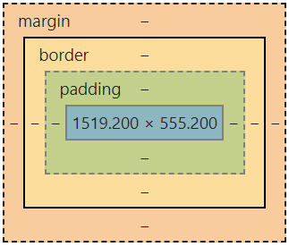

I have based my Learning Agreement on my strength and limitations, which you can read more about here.
I will manage my workload in this programme by communicating with other learners, facilitators and industry/community representatives in an open, supportive, respectful and honest manner. I will take the following specific steps to achieve this;
I have been perhaps overly-conscious in the past of some natural weaknesses, specifically stubborness or being domineering. This has led to me overcompensating, and scenarios where I have not contributed as much as I could have for fear of coming across this way. I therefore want to focus on finding the right balance, and trusting and allowing myself to actively contribute differing views or opinions which are appropriate and necessary in a healthy, safe learning environment.
I will seek help in the following order;
I expect guidance from the facilitation team, as opposed to answers and information. I would like them to teach me to learn, rather than teach me the answers.
For the foundations section of the course, I have blocked out time for my full-time job, and have created a schedule on Google Calendars which provides the framework for a minimum of 15 hours per week of study.
For the bootcamp section of the course, I have blocked out the entire nine weeks to focus solely on the course. I will also block out time for a minimum of three one-hour runs or work-outs per week. I have also blocked out one weekend to attend a wedding having already spoken to my facilitator about this, and will communicate with her on any other requirements that may come up in future.
I aim to contribute as much as I take from the course, through meaningful interactions with all my peers. I will be punctual, dependable and present and will be committing myself fully to all coursework and projects.
Having now reached the end of foundations sprint 5, I am adding the updates below to my learning plan in preparation for bootcamp.
"What is the difference between Margin, Border and Padding?"
The answer is surprisingly simple. Let's use the picture below to illustrate;
The margin is the space around the very outside of your element.
Think of the border as the "frame" around your element. The border is directly inside the margin.
The padding is the space between your element and the border.
Think of it like this; The new laptop you ordered online has just arrived. Your laptop (element) is wrapped in styrofoam (padding) inside a cardboard box (border). The air between the package and whatever else it is touching is the margin.
Let's use the homepage of this blog to show some specific examples of Margins, Borders and Padding. Here is what the page usually looks like:
.png)
Now, let's highlight Margin, Border and Padding using the same colour scheme as earlier. (We will focus just on the first "div" at the top of the screen. If you're not sure what a "div" is, I just mean the big rectangle that says "My Blog" and has some links in it);
.png)
And that is basically it! From these three basic building blocks, however, the design possibilities are endless.
For example, did you notice that you can only see the green padding around three sides of the div? I removed the bottom padding because I wanted my links to sit snugly on top of the bottom border.
I gave this div the class "banner", and wrote the code below. Done!
.png)
Now try it out yourself. You can highlight the margin, border and padding like on any webpage you visit by right-clicking and selecting "inspect"......
.png)
....and navigating to the "Computed" tab.
.png)
All you need to do now is hover your mouse over the code you want to inspect (in the elements tab). I highly recommend getting in the habit of doing this. It really solidified my understanding of the concepts. Next time you see an interesting website, and you are unsure what is happening with Margin, Border and Padding, take the time to inspect.
Enjoy!